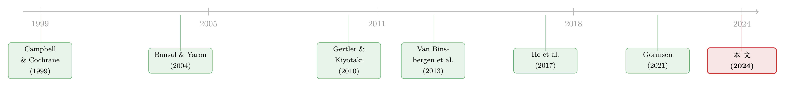

一条会「调头」的曲线：当中间商的杠杆，给股票期限结构定了脾气
本文读的是 Li & Xu (2024, Journal of Financial Economics)：股票收益率曲线 (equity yield curve) 在繁荣时向上倾斜、衰退时向下倾斜（顺周期），可股票期限溢价 (equity term premium) 却是逆周期的——两件看似矛盾的事。作者用一个会计恒等式把斜率拆成「期限溢价」与「均值回复」两块，证明后者占主导；再用一个带杠杆约束的金融中介模型，给出能让风险价格「快速回头」的机制，并从其他资产类别的横截面里估出一根相对紧度指数 (Relative Tightness Index)，让模型与数据第一次对上了话。
1 一根在 2008 年突然「调头」的曲线
先讲一个让人不太舒服的事实。
把不同到期的股息（dividend）现金流拆出来单独定价，你会得到一条「股票收益率曲线」——短久期的股息一个价，长久期的股息另一个价。在正常年景里，这条曲线是向上倾斜的；可一旦经济陷入衰退，它会陡峭地向下倒挂。2008 年金融危机时，这条曲线倒挂得格外难看。换句话说，股票收益率曲线的斜率是顺周期 (procyclical) 的：好的时候向上，坏的时候向下（Van Binsbergen et al., 2013）。
接着，一个自然的问题是：曲线在衰退里向下倒挂，是不是意味着「短久期股息的预期回报更高」？毕竟收益率曲线一向下，直觉就告诉我们短端收益更诱人。如果真是这样，那股票期限溢价——长久期相对短久期多要的那点风险补偿——就应该在坏时候变成负的。
然而，Gormsen (2021) 量出来的恰恰相反：股票期限溢价是逆周期 (countercyclical) 的。也就是说，在坏时候，长久期的股票索取的风险补偿不降反升，长端比短端更值钱。
于是矛盾摆在桌面上：收益率曲线的斜率是顺周期的，期限溢价却是逆周期的。 它们方向相反，却都被同一份数据反复确认。一个模型若想同时讲清这两件事，就必须找到第三股力量，把这两条看似拧着的线，拧回到同一个故事里去。
这第三股力量，就是本文的核心：收益率的「均值回复 (mean reversion)」。
2 一个会计恒等式：把斜率拆成两半
要看清这股力量，得先有把称它的尺子。作者借用了利率期限结构里的老办法（Cochrane and Piazzesi, 2005），把股票收益率曲线做了一次纯会计意义上的分解——没有任何模型假设，就是恒等式。
按 Van Binsbergen et al. (2013) 的记号，记 \(P_{n,t}\) 为时点 \(t\) 上「\(t+n\) 期那一笔股息」的价格，这样一份单期股息的索取权，就是所谓的股息条 (dividend strip) 或「零息股权 (zero-coupon equity)」。它的一期对数回报定义为
$$r_{n,t+1} = \ln\!\left(\frac{P_{n-1,t+1}}{P_{n,t}}\right).$$
而到期 \(n\) 年的股票收益率 (equity yield)，则是
$$e_{n,t} \equiv \frac{1}{n}\ln\!\left(\frac{D_t}{P_{n,t}}\right) = y_{n,t} + \theta_{n,t} - g^{d}_{n,t}.$$
这一步值得停下来看一眼：股票收益率被拆成了三块——名义债券收益率 \(y_{n,t}\)、持有这条股息条所要的平均风险溢价 \(\theta_{n,t}\)、以及未来 \(n\) 年的预期对数股息增长率 \(g^{d}_{n,t}\)。在期货市场上，人们直接用股息期货报价，于是又有了远期股票收益率 (forward equity yield)：
$$ef_{n,t} \equiv \frac{1}{n}\ln\!\left(\frac{D_t}{F_{n,t}}\right) = \theta_{n,t} - g^{d}_{n,t},$$
它干脆把利率那一块也剥掉了，只剩风险溢价与增长预期。
然后，关键的一步来了。股息条回报是一期回报，它的期限斜率只反映「风险高低之差」；可股票收益率是跨多个时段的预期回报，它的期限斜率不仅含风险高低之差，还含风险随时间变化的预期。把这层「随时间变化」的部分单独拎出来，就得到了全文的中枢——命题 2：
读懂这个式子，整篇文章就读懂了一半。左边是我们观测到的收益率曲线斜率；右边第一项 \(\xi\) 是股权期限溢价（\(\zeta\) 是同到期债券的部分），第二项则是「市场预期未来收益率会怎么变」。命题里还有个漂亮的副产品（命题 1）：长久期收益率可以写成未来短端收益率的预期 + 一个期限溢价——和债券世界里我们熟悉的预期假说，一模一样。
直觉是这样的：衰退里短端收益率高于长端，并不是因为短久期股息条挣的风险溢价更高，而是因为市场预期收益率会很快回落——这种向均值快速回归的预期，压过了期限溢价本身想把曲线推成向上倾斜的倾向。于是曲线被「预期」拽成了向下。
这里有一个容易被忽略的精妙之处：无条件地看（取期望），均值回复分量是消失的，股票收益率斜率的无条件均值与股息条回报斜率携带的是同一份信息（Eq. 9）；可一旦有条件地看（盯住周期），均值回复分量就跳出来当了主角。无条件相同、有条件分道扬镳——这正是化解那个矛盾的钥匙。
3 数据与典型事实：均值回复几乎解释了全部
光有恒等式还不够，得让数据说话。作者用一家活跃于股息条市场的大型金融机构提供的报价，覆盖 S&P 500、EuroStoxx 50、Nikkei 225 三大指数的股息期货，样本期为 2004 年 12 月至 2017 年 2 月，每条序列 147 个月度观测。然后跑了四个滚动回归（标准误均按 Newey and West (1987) 取 12 阶滞后）。
第一个回归看斜率的周期性：把 5 年与 1 年远期收益率之差，对当期股息价格比 \((d_t-p_t)\) 回归，
$$ef_{n,t} - ef_{1,t} = \alpha_0 + \alpha_1 (d_t - p_t) + \varepsilon_t.$$
\((d_t-p_t)\) 在衰退里偏高，所以 \(\alpha_1<0\) 就意味着斜率顺周期。结果：S&P 500 的 α₁ = −0.426（标准误 0.050，\(R^2=0.78\)），面板 α₁ = −0.220。曲线斜率确实强烈顺周期。
第二个回归看期限溢价的周期性，把已实现的长短股息条回报之差对 \((d_t-p_t)\) 回归，得到 S&P 500 β₁ = 0.169（面板同为 0.169）。系数为正、在坏时候溢价更高——逆周期，与 Gormsen 一致。
但真正关键的，是最后一个回归。把「预期变化分量」直接对收益率斜率回归：
$$\frac{1}{5}\sum_{i=1}^{5}(i-1)\left(ef_{i-1,t+12}-ef_{i-1,t}\right) = \theta_0 + \theta_1\left(ef_{5,t}-ef_{1,t}\right)+\varepsilon_{t,t+12}.$$
\(\theta_1\) 衡量的是：收益率斜率的波动里，有多大一块来自均值回复分量。结果令人侧目——S&P 500 的 θ₁ = 0.992（标准误 0.347），面板甚至 θ₁ = 1.378。换句话说，收益率曲线斜率的全部（乃至更多）变动，几乎都由均值回复分量贡献。 期限溢价虽逆周期，却被这股顺周期的均值回复力量彻底压倒。
至此，那个矛盾被干净地解开了：逆周期的期限溢价与顺周期的收益率曲线，可以共存，因为后者主要不是溢价说了算，而是「预期收益率会快速回头」说了算。
4 谁来制造这么快的「回头」？——中间商登场
恒等式只是把现象拆开了，并没有解释为什么风险价格会回头得这么快。这才是真正难的一关。
作者指出：在长期风险模型 (Bansal and Yaron, 2004) 和习惯形成模型 (Campbell and Cochrane, 1999) 的标准校准里，贴现率的均值回复速度太慢，根本撑不起一条顺周期的收益率曲线。要让曲线顺周期，你需要一个能让风险价格快速均值回复的机制。
但真正关键的一步，是把金融中介 (financial intermediary) 请进模型。作者在一个禀赋经济里嵌入一个带杠杆约束 (leverage constraint) 的中介部门，沿用 Gertler and Kiyotaki (2010) 的设定。机制是这样的：
- 中介约束越紧，其净值的边际价值越高，而且对总消费冲击越敏感；
- 于是风险价格随约束紧度上升，而且是以递增的速率上升——这正是制造「强均值回复」的关键非线性；
- 衰退里中介净值很低时，净值哪怕只回升一点点，风险价格和风险溢价就会大幅下降；同时这些时候的高预期股票回报，又帮助中介把净值修复回去。
这套「净值低 → 风险价格高且敏感 → 回报高 → 净值修复 → 风险价格快速回落」的负反馈，恰恰给了贴现率一个快速均值回复的发动机。值得一提的是，作者没有用对数线性近似，而是采用允许约束偶尔绑定 (occasionally binding constraint) 的全局解法——因为在约束绑定的区域，动态是高度非线性的，近似会把最关键的那部分抹掉。
把这套机制量化后，作者发现：约有 50% 的股票收益率斜率波动，可归因于贴现率斜率的变动；再把可预测的股息增长纳入扩展模型后，几乎能解释收益率斜率的全部变动。
这条「股票其实是被中介定价的资产」的思路，与本博客此前讨论过的《股票，真的是中介「无关」的资产吗？》遥相呼应；而「贴现率才是资产定价中心议题」的母题，则可上溯到《贴现率：资产定价的中心议题》。
5 相对紧度指数：从别人的横截面里，反推中介的「松紧」
模型有了，可中介约束的「紧度」是看不见的状态变量，怎么把它从数据里量出来？这是本文方法论上最漂亮的一招。
作者没有直接挑选某一个现成的中介代理变量（券商杠杆、资本比率，文献至今对哪个最优、中介杠杆到底顺周期还是逆周期都没有定论），而是走了一条模型引导的路：用 He et al. (2017) 那套覆盖多种资产类别的横截面回报，配合若干中介状态变量，构造一根相对紧度指数 (RT index)，去刻画中介净值的边际价值。
有意思的地方在于：这根指数明明是从别的资产类别的回报里估出来的，却对股票收益率斜率的动态展现出比其他变量都更强的解释力。它就像一座桥，把那个看不见的「中介随机贴现因子」和可观测的股息期货市场（一个由成熟机构投资者主导的市场）连了起来，从而让作者能够严格地把模型校准到数据上。
6 一个额外的红利：便利收益
如果故事到这里就结束，它已经足够完整。但杠杆约束还顺手给出了第二个、与股票期限结构看似无关的推论——便利收益 (convenience yield)。
杠杆约束的本质，是在「可抵押程度不同」的贷款利率之间打入一个楔子（比如同业拆借 vs. 政府债）。当信贷紧缩、中介净值大幅下跌时，这个利差会显著走阔。于是模型自然生出逆周期的便利收益：高便利收益与低市盈率、与更紧的中介约束同时出现。更妙的是，由于债券风险溢价和便利收益在模型里共享同一个风险源，便利收益还能预测未来的超额债券回报——这与 Van Binsbergen et al. (2021) 的实证发现完全吻合。
关于「便利收益」与「被制造出来的无风险资产」，本博客也曾从另一个角度讨论过，见《无风险国债是「制造」出来的：被保护的是谁，被牺牲的又是谁》。
7 文献脉络
把这篇论文放回它生长的那条线里，会看得更清楚。
故事的源头是消费基础资产定价的两大主力：习惯形成模型（Campbell and Cochrane, 1999）和长期风险模型（Bansal and Yaron, 2004）。它们各自能解释不少东西，但在「贴现率均值回复速度」这一维度上都偏慢。接着，股息条数据的出现打开了一个全新的检验场：Van Binsbergen et al. (2012, 2013) 用股息期货量出了股票期限结构的形状，引发了「无条件斜率到底向上还是向下」的长期争论（Bansal et al., 2021 认为考虑流动性后可以是向上的）。
然后，关于有条件期限结构的证据逐渐稳固下来：收益率斜率顺周期、期限溢价逆周期。Gormsen (2021) 把焦点放在逆周期的期限溢价上；本文则反过来，强调那个被忽视、却占主导的顺周期均值回复分量。与此同时，中介资产定价这条线——Adrian et al. (2014)、He et al. (2017)——证明了中介状态变量能给众多资产类别定价，而 Gertler and Kiyotaki (2010) 提供了带杠杆约束的中介框架。本文站在这两条线的交汇处：用一个会计恒等式把争论拆开，再用一个中介模型把它解释清楚，最后用一根从横截面估出的紧度指数把模型钉回数据上。

评论与延伸（Q&A + 研究方向）
（a）几个可能的疑问
Q：这个分解框架和 Gormsen (2021) 的分解，到底差在哪？
两者都把收益率斜率拆成「期限溢价 + 预期变化」，但侧重相反。Gormsen 强调逆周期的期限溢价；本文用一个会计恒等式（命题 2），把「预期变化」定义为一期的预期收益率变化，更易解释与识别，并据此论证：真正驱动斜率顺周期的是均值回复分量（实证里
θ₁≈1），而非期限溢价。
Q：θ₁ = 0.992（甚至面板里 1.378）说明均值回复「几乎解释全部」，可这些回归的标准误并不小，结论稳吗？
S&P 500 的
θ₁标准误为0.347，单看一国并非毫无噪声。但作者在三大指数和面板上得到一致的量级，且面板系数同样接近或超过 1，方向上高度稳健。需要警惕的是 147 个月、三个高度相关的发达市场，本质上不是三个独立样本，有效自由度有限——把它当成「定性结论强、点估计别抠太死」更合适。
Q：为什么非要请中介出场？长期风险或习惯模型加点参数不行吗？
关键卡点在「均值回复速度」。作者明确指出，在标准校准下这两类模型的贴现率回复太慢，无法生成顺周期的收益率斜率。中介模型的优势在于杠杆约束带来的递增非线性：净值越低，风险价格对冲击越敏感，从而内生出足够快的回复速度。这不是参数微调能补的，而是机制上的差别。
Q：RT 指数从别的资产类别估出来，却去解释股票收益率，会不会是「过度拟合」或循环论证？
这恰恰是设计上的巧思而非缺陷：被解释变量（股息期货收益率斜率）完全没进入估计 RT 指数的信息集，是一次真正的样本外检验。当然，He et al. (2017) 的横截面与股票市场共享宏观周期，二者的相关未必全是「中介渠道」，也可能是共同的周期成分——这是需要进一步证伪的地方。
Q：便利收益这一块，是模型的独立证据，还是顺带凑出来的？
它是同一个杠杆约束的额外可证伪推论：约束一紧，可抵押与不可抵押资产的利差走阔，便利收益逆周期，并能预测债券超额回报。由于它和股票期限结构共享同一风险源，能同时对上两个看似无关的实证事实（本文 + Van Binsbergen et al., 2021），这比单独拟合一条曲线更有说服力。
Q：样本只到 2017 年 2 月，错过了 2020 年的疫情冲击，会影响结论吗？
会留下一个悬念。2020 年 3 月是一次教科书式的中介约束骤紧事件，按模型应当出现收益率曲线急剧倒挂 + 便利收益飙升。把样本延长到 2020–2022，是对该机制最干净的一次「压力测试」，作者受限于数据可得性没能覆盖。
（b）几个可能的研究问题与提案
- 把 RT 指数搬到公司债 / 信用市场
- 【经济故事】中介约束一紧，可抵押程度低的信用资产首当其冲。若 RT 指数能预测投资级与高收益债的利差斜率，就把「中介定价」从股权延伸到了信用维度，且信用市场的中介属性比股票更强。
-
【可行性】高。数据用 TRACE + ICE/Merrill 指数构造信用利差期限结构，RT 指数沿用本文方法；识别上可借中介净值冲击（如一级交易商资产负债表）做工具。
-
外资持有人与中介紧度的交互
- 【经济故事】当本国中介约束绑定时，外资是缓冲还是放大器？若外资在危机里撤出，等于抽走了边际定价者的资本，应当放大收益率曲线的倒挂幅度。
-
【可行性】中。需要按持有人国籍拆分的债券/股息期货持仓（TIC、ECB SHS），与 RT 指数交乘；难点在持仓数据频率偏低，识别需依赖跨国的中介冲击差异。
-
2020 年疫情作为偶尔绑定约束的事件研究
- 【经济故事】本文用全局解法刻画约束绑定区域的非线性，而 2020 年 3 月提供了一次罕见的「约束确实绑定」的自然实验。模型预测此时收益率曲线急剧倒挂、便利收益跳升。
-
【可行性】高。数据为延长后的股息期货 + Van Binsbergen et al. (2021) 式便利收益度量；纯事件研究，识别清晰，唯一门槛是拿到 2020 年后的股息条报价。
-
均值回复速度的国别异质性
- 【经济故事】不同国家中介部门的杠杆监管松紧不同，若监管更严（约束更易绑定）的市场，其收益率斜率的均值回复更快，就能把「制度 → 机制 → 价格」打通。
- 【可行性】中。需多国股息期货（本文已有三国）+ 各国银行杠杆监管指标；样本国数太少是硬约束，更适合做描述性的跨国相关而非因果。
参考文献
- Adrian, T., Etula, E., Muir, T. (2014). Financial intermediaries and the cross-section of asset returns. Journal of Finance 69(6), 2557–2596.
- Bansal, R., Yaron, A. (2004). Risks for the long run: A potential resolution of asset pricing puzzles. Journal of Finance 59(4), 1481–1509.
- Campbell, J.Y., Cochrane, J.H. (1999). By force of habit: A consumption-based explanation of aggregate stock market behavior. Journal of Political Economy 107(2), 205–251.
- Cochrane, J.H., Piazzesi, M. (2005). Bond risk premia. American Economic Review 95(1), 138–160.
- Gertler, M., Kiyotaki, N. (2010). Financial intermediation and credit policy in business cycle analysis. Handbook of Monetary Economics 3, 547–599.
- Gormsen, N.J. (2021). Time variation of the equity term structure. Journal of Finance 76(4), 1959–1999.
- He, Z., Kelly, B., Manela, A. (2017). Intermediary asset pricing: New evidence from many asset classes. Journal of Financial Economics 126(1), 1–35.
- Li, K., Xu, C. (2024). Intermediary-based equity term structure. Journal of Financial Economics 157, 103856.
- Newey, W.K., West, K.D. (1987). A simple, positive semi-definite, heteroskedasticity and autocorrelation consistent covariance matrix. Econometrica 55(3), 703–708.
- Van Binsbergen, J., Brandt, M., Koijen, R. (2012). On the timing and pricing of dividends. American Economic Review 102(4), 1596–1618.
- Van Binsbergen, J., Hueskes, W., Koijen, R., Vrugt, E. (2013). Equity yields. Journal of Financial Economics 110(3), 503–519.
- Van Binsbergen, J.H., Koijen, R.S. (2017). The term structure of returns: Facts and theory. Journal of Financial Economics 124(1), 1–21.
- Van Binsbergen, J.H., Diamond, W.F., Grotteria, M. (2021). Risk-free interest rates. Journal of Financial Economics 143(1), 1–29.
- Weber, M. (2018). Cash flow duration and the term structure of equity returns. Journal of Financial Economics 128(3), 486–503.
评述者的判断。 这篇论文最让我欣赏的，是它把一个看似拧巴的实证矛盾，用一个「无条件相同、有条件分道」的会计恒等式拆得干干净净，再用一个机制清晰的中介模型把它焊回到经济学上——而不是堆参数硬拟合。θ₁≈1 这个结果尤其有冲击力：收益率曲线斜率几乎全由均值回复驱动，这对所有消费基础模型都立下了一条「回复速度必须够快」的硬约束。RT 指数则是方法论上的真亮点，把不可观测的中介紧度变成了可检验的样本外预测变量。
对识别，我的两点保留是：其一，样本只有 147 个月、三个高度相关的发达市场，有效自由度比表面上小，点估计不宜抠得太死；其二，RT 指数与股票市场共享宏观周期，二者相关里有多少真属于「中介渠道」、多少只是共同的周期成分，还需要更外生的中介冲击来证伪。
接下来我最想看到的，是把样本延长到 2020–2022——那是一次教科书式的中介约束骤紧，是对这套机制最干净的一次压力测试；以及把同一根 RT 指数搬到中介属性更强的公司债与信用市场里，看它能否同样点石成金。